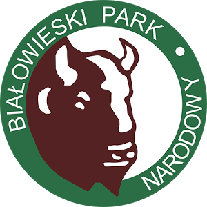
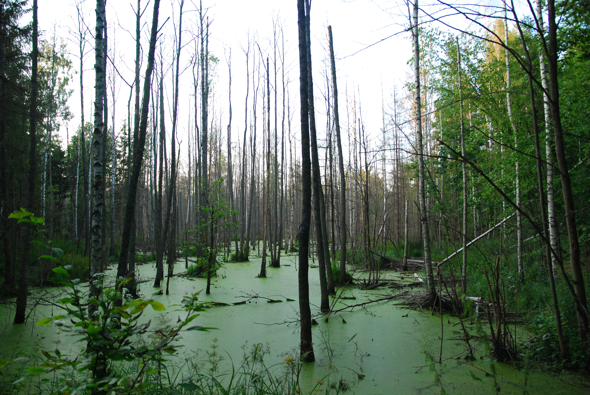
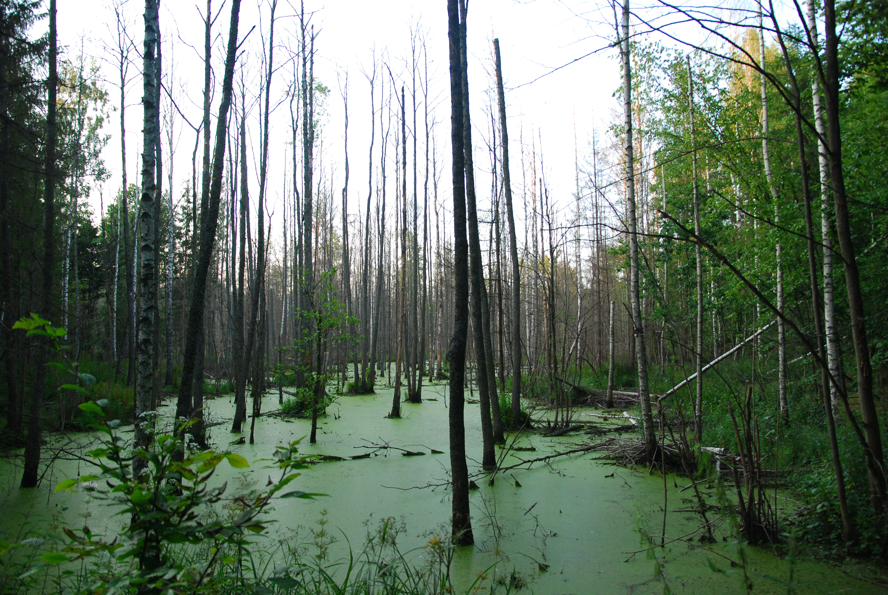

Białowieski Park Narodowy
Park został utworzony w roku 1932, a jego powierzchnia wynosi 105,17 km2. Znajduje się w północno-wschodniej części Polski, w województwie podlaskim, tuż przy granicy z Białorusią. Jego symbolem jest żubr, którego właśnie tutaj uchroniono od zagłady. Białowieski Park Narodowy jest drugim najstarszym parkiem narodowym w Polsce i jednym z pierwszych w Europie. Park chroni fragmenty najlepiej zachowanej Puszczy Białowieskiej, czyli ostatniego w Europie fragmentu lasu pierwotnego oraz największej na świecie populacji żubra żyjącego na wolności. Obecnie w Białowieskiej Puszczy, po obu stronach granicy, żyje około 1000 żubrów. Co warte podkreślenia, na świecie żyje 4500 sztuk tego gatunku i wszystkie pochodzą z białowieskiej hodowli. Las natomiast jest najlepiej zachowanym lasem naturalnym na Nizinie Wschodnioeuropejskiej. Znacząco przeważają tutaj lasy liściaste. Na terenie Puszczy stwierdzono występowanie ponad 12 tysięcy gatunków zwierząt, gdy w całej Polsce jest ich ok. 40 tysięcy. Jednak szacuje się, że flora puszczy jest rozpoznana dopiero w połowie.
 
